Add and Subtract Integers
Use Negatives and Opposites
Our work so far has only included the counting numbers and the whole numbers. But if you have ever experienced a temperature below zero or accidentally overdrawn your checking account, you are already familiar with negative numbers. Negative numbers are numbers less than The negative numbers are to the left of zero on the number line. See Figure 1.
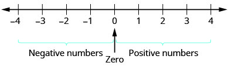
The arrows on the ends of the number line indicate that the numbers keep going forever. There is no biggest positive number, and there is no smallest negative number.
Is zero a positive or a negative number? Numbers larger than zero are positive, and numbers smaller than zero are negative. Zero is neither positive nor negative.
Consider how numbers are ordered on the number line. Going from left to right, the numbers increase in value. Going from right to left, the numbers decrease in value. See Figure 2.
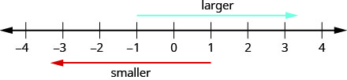
Remember that we use the notation:
a < b (read “a is less than b”) when a is to the left of b on the number line.
a > b (read “a is greater than b”) when a is to the right of b on the number line.
Now we need to extend the number line which showed the whole numbers to include negative numbers, too. The numbers marked by points in Figure 3 are called the integers. The integers are the numbers

Order each of the following pairs of numbers, using < or >: ⓐ ⓑ ⓒ ⓓ
Solution
Solution
It may be helpful to refer to the number line shown. 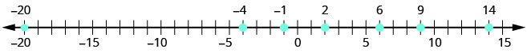
|
ⓐ 14 is to the right of 6 on the number line. |
|
|
ⓑ −1 is to the left of 9 on the number line. |
|
|
ⓒ −1 is to the right of −4 on the number line. |
|
|
ⓓ 2 is to the right of −20 on the number line. |
You may have noticed that, on the number line, the negative numbers are a mirror image of the positive numbers, with zero in the middle. Because the numbers 2 and are the same distance from zero, they are called opposites. The opposite of 2 is and the opposite of is 2.
Figure 4 illustrates the definition.
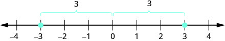
Sometimes in algebra the same symbol has different meanings. Just like some words in English, the specific meaning becomes clear by looking at how it is used. You have seen the symbol “−” used in three different ways.
| Between two numbers, it indicates the operation of subtraction. We read as "10 minus 4." |
|
| In front of a number, it indicates a negative number. We read −8 as "negative eight." |
|
| In front of a variable, it indicates the opposite. We read as "the opposite of ." | |
| Here there are two "−" signs. The one in the parentheses tells us the number is negative 2. The one outside the parentheses tells us to take the opposite of −2. We read as "the opposite of negative two." |
Find: ⓐ the opposite of 7 ⓑ the opposite of ⓒ
Solution
Solution
| ⓐ −7 is the same distance from 0 as 7, but on the opposite side of 0. |
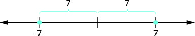 The opposite of 7 is −7. |
| ⓑ 10 is the same distance from 0 as −10, but on the opposite side of 0. |
 The opposite of −10 is 10. |
| ⓒ −(−6) (the opposite of –6). |
 The opposite of −(−6) is 6. |
Our work with opposites gives us a way to define the integers.The whole numbers and their opposites are called the integers. The integers are the numbers
When evaluating the opposite of a variable, we must be very careful. Without knowing whether the variable represents a positive or negative number, we don’t know whether is positive or negative. We can see this in Example 3.
Evaluate ⓐ when ⓑ when
Solution
Solution
-
ⓐ
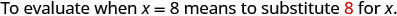
−x 
Write the opposite of 8. 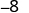
-
ⓑ

−x 
Write the opposite of −8. 8
Simplify: Expressions with Absolute Value
We saw that numbers such as are opposites because they are the same distance from 0 on the number line. They are both two units from 0. The distance between 0 and any number on the number line is called the absolute value of that number.
For example,
- units away from so
- units away from so
Figure 5 illustrates this idea.

The absolute value of a number is never negative (because distance cannot be negative). The only number with absolute value equal to zero is the number zero itself, because the distance from on the number line is zero units.
Mathematicians say it more precisely, “absolute values are always non-negative.” Non-negative means greater than or equal to zero.
Simplify: ⓐ ⓑ ⓒ .
Solution
Solution
The absolute value of a number is the distance between the number and zero. Distance is never negative, so the absolute value is never negative.
ⓐ
ⓑ
ⓒ
In the next example, we’ll order expressions with absolute values. Remember, positive numbers are always greater than negative numbers!
Fill in for each of the following pairs of numbers:
ⓐ ⓑ ⓒ ⓓ
Solution
Solution
|
ⓐ
Simplify. Order. |
|
|
ⓑ
Simplify. Order. |
|
|
ⓒ
Simplify. Order. |
|
|
ⓓ
Simplify. Order. |
We now add absolute value bars to our list of grouping symbols. When we use the order of operations, first we simplify inside the absolute value bars as much as possible, then we take the absolute value of the resulting number.
In the next example, we simplify the expressions inside absolute value bars first, just as we do with parentheses.
Simplify:
Solution
Solution
| Work inside parentheses first: subtract 2 from 6. | |
| Multiply 3(4). | |
| Subtract inside the absolute value bars. | |
| Take the absolute value. | |
| Subtract. |
Evaluate: ⓐ ⓑ ⓒ ⓓ
Solution
Solution
 |
 |
| Take the absolute value. | 35 |
ⓑ
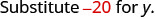 |
 |
| Simplify. | |
| Take the absolute value. | 20 |
ⓒ
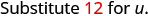 |
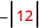 |
| Take the absolute value. |
ⓓ
 |
 |
| Take the absolute value. |
Add Integers
Most students are comfortable with the addition and subtraction facts for positive numbers. But doing addition or subtraction with both positive and negative numbers may be more challenging.
We will use two color counters to model addition and subtraction of negatives so that you can visualize the procedures instead of memorizing the rules.
We let one color (blue) represent positive. The other color (red) will represent the negatives. If we have one positive counter and one negative counter, the value of the pair is zero. They form a neutral pair. The value of this neutral pair is zero.

We will use the counters to show how to add the four addition facts using the numbers and
To add we realize that means the sum of 5 and 3.
| We start with 5 positives. |  |
| And then we add 3 positives. |  |
| We now have 8 positives. The sum of 5 and 3 is 8. |  |
Now we will add Watch for similarities to the last example
To add we realize this means the sum of
| We start with 5 negatives. |  |
| And then we add 3 negatives. |  |
| We now have 8 negatives. The sum of −5 and −3 is −8. | 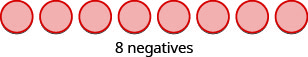 |
In what ways were these first two examples similar?
- The first example adds 5 positives and 3 positives—both positives.
- The second example adds 5 negatives and 3 negatives—both negatives.
In each case we got 8—either 8 positives or 8 negatives.
When the signs were the same, the counters were all the same color, and so we added them.

Add: ⓐ ⓑ
Solution
Solution
 |
| 1 positive plus 4 positives is 5 positives. |
 |
| 1 negative plus 4 negatives is 5 negatives. |
So what happens when the signs are different? Let’s add We realize this means the sum of and 3. When the counters were the same color, we put them in a row. When the counters are a different color, we line them up under each other.
| −5 + 3 means the sum of −5 and 3. | |
| We start with 5 negatives. |  |
| And then we add 3 positives. |  |
| We remove any neutral pairs. | 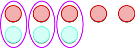 |
| We have 2 negatives left. | 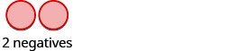 |
| The sum of −5 and 3 is −2. | −5 + 3 = −2 |
Notice that there were more negatives than positives, so the result was negative.
Let’s now add the last combination,
| 5 + (−3) means the sum of 5 and −3. | |
| We start with 5 positives. |  |
| And then we add 3 negatives. |  |
| We remove any neutral pairs. | 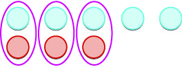 |
| We have 2 positives left. |  |
| The sum of 5 and −3 is 2. | 5 + (−3) = 2 |
When we use counters to model addition of positive and negative integers, it is easy to see whether there are more positive or more negative counters. So we know whether the sum will be positive or negative.
![Two images are shown and labeled. The left image shows five red counters in a horizontal row drawn above three blue counters in a horizontal row, where the first three pairs of red and blue counters are circled. Above this diagram is written “negative 5 plus 3” and below is written “More negatives – the sum is negative.” The right image shows five blue counters in a horizontal row drawn above three red counters in a horizontal row, where the first three pairs of red and blue counters are circled. Above this diagram is written “5 plus negative 3” and below is written “More positives – the sum is positive.”](../../media/CNX_ElemAlg_Figure_01_03_026_img_new.jpg)
Add: ⓐ ⓑ
Solution
Solution
| −1 + 5 | |
 |
|
| There are more positives, so the sum is positive. | 4 |
ⓑ
| 1 + (−5) | |
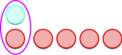 |
|
| There are more negatives, so the sum is negative. | −4 |
Now that we have added small positive and negative integers with a model, we can visualize the model in our minds to simplify problems with any numbers.
When you need to add numbers such as you really don’t want to have to count out 37 blue counters and 53 red counters. With the model in your mind, can you visualize what you would do to solve the problem?
Picture 37 blue counters with 53 red counters lined up underneath. Since there would be more red (negative) counters than blue (positive) counters, the sum would be negative. How many more red counters would there be? Because there are 16 more red counters.
Therefore, the sum of is
Let’s try another one. We’ll add Again, imagine 74 red counters and 27 more red counters, so we’d have 101 red counters. This means the sum is
Let’s look again at the results of adding the different combinations of and
Visualize the model as you simplify the expressions in the following examples.
Simplify: ⓐ ⓑ
Solution
Solution
-
ⓐ Since the signs are different, we subtract The answer will be negative because there are more negatives than positives.
-
ⓑ Since the signs are the same, we add. The answer will be negative because there are only negatives.
The techniques used up to now extend to more complicated problems, like the ones we’ve seen before. Remember to follow the order of operations!
Simplify:
Solution
Solution
| Simplify inside the parentheses. | |
| Multiply. | |
| Add left to right. |
Subtract Integers
We will continue to use counters to model the subtraction. Remember, the blue counters represent positive numbers and the red counters represent negative numbers.
Perhaps when you were younger, you read as take away When you use counters, you can think of subtraction the same way!
We will model the four subtraction facts using the numbers and
To subtract we restate the problem as take away
| We start with 5 positives. | 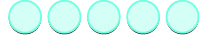 |
| We ‘take away’ 3 positives. |  |
| We have 2 positives left. | |
| The difference of 5 and 3 is 2. | 2 |
Now we will subtract Watch for similarities to the last example
To subtract we restate this as take away
| We start with 5 negatives. |  |
| We ‘take away’ 3 negatives. |  |
| We have 2 negatives left. | |
| The difference of −5 and −3 is −2. | −2 |
Notice that these two examples are much alike: The first example, we subtract 3 positives from 5 positives and end up with 2 positives.
In the second example, we subtract 3 negatives from 5 negatives and end up with 2 negatives.
Each example used counters of only one color, and the “take away” model of subtraction was easy to apply.
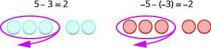
Subtract: ⓐ ⓑ
Solution
Solution
|
ⓐ Take 5 positive from 7 positives and get 2 positives. |
|
|
ⓑ Take 5 negatives from 7 negatives and get 2 negatives. |
What happens when we have to subtract one positive and one negative number? We’ll need to use both blue and red counters as well as some neutral pairs. Adding a neutral pair does not change the value. It is like changing quarters to nickels—the value is the same, but it looks different.
- To subtract we restate it as take away 3.
We start with 5 negatives. We need to take away 3 positives, but we do not have any positives to take away.
Remember, a neutral pair has value zero. If we add 0 to 5 its value is still 5. We add neutral pairs to the 5 negatives until we get 3 positives to take away.
| −5 − 3 means −5 take away 3. | |
| We start with 5 negatives. | |
| We now add the neutrals needed to get 3 positives. |  |
| We remove the 3 positives. |  |
| We are left with 8 negatives. |  |
| The difference of −5 and 3 is −8. | −5 − 3 = −8 |
And now, the fourth case, We start with 5 positives. We need to take away 3 negatives, but there are no negatives to take away. So we add neutral pairs until we have 3 negatives to take away.
| 5 − (−3) means 5 take away −3. | |
| We start with 5 positives. |  |
| We now add the needed neutrals pairs. |  |
| We remove the 3 negatives. |  |
| We are left with 8 positives. |  |
| The difference of 5 and −3 is 8. | 5 − (−3) = 8 |
Subtract: ⓐ ⓑ
Solution
Solution
| Take 1 positive from the one added neutral pair. |
 
|
−3 − 1 −4 |
| Take 1 negative from the one added neutral pair. |
 |
3 − (−1) 4 |
Have you noticed that subtraction of signed numbers can be done by adding the opposite? In Example 13, is the same as and is the same as You will often see this idea, the subtraction property, written as follows:
Look at these two examples.
![Two images are shown and labeled. The first image shows four gray spheres drawn next to two gray spheres, where the four are circled in red, with a red arrow leading away to the lower left. This drawing is labeled above as “6 minus 4” and below as “2.” The second image shows four gray spheres and four red spheres, drawn one above the other and circled in red, with a red arrow leading away to the lower left, and two gray spheres drawn to the side of the four gray spheres. This drawing is labeled above as “6 plus, open parenthesis, negative 4, close parenthesis” and below as “2.”](../../media/CNX_ElemAlg_Figure_01_03_035_img_new.jpg)
Of course, when you have a subtraction problem that has only positive numbers, like you just do the subtraction. You already knew how to subtract long ago. But knowing that gives the same answer as helps when you are subtracting negative numbers. Make sure that you understand how and give the same results!
Simplify: ⓐ and ⓑ and
Solution
Solution
|
ⓐ Subtract. |
||
|
ⓑ Subtract. |
Look at what happens when we subtract a negative.
![This figure is divided vertically into two halves. The left part of the figure contains the expression 8 minus negative 5, where negative 5 is in parentheses. The expression sits above a group of 8 blue counters next to a group of five blue counters in a row, with a space between the two groups. Underneath the group of five blue counters is a group of five red counters, which are circled. The circle has an arrow pointing away toward bottom left of the image, symbolizing subtraction. Below the counters is the number 13. The right part of the figure contains the expression 8 plus 5. The expression sits above a group of 8 blue counters next to a group of five blue counters in a row, with a space between the two groups. Underneath the counters is the number 13.](../../media/CNX_ElemAlg_Figure_01_03_036_img_new.jpg)
Subtracting a negative number is like adding a positive!
You will often see this written as
Does that work for other numbers, too? Let’s do the following example and see.
Simplify: ⓐ and ⓑ and
Solution
Solution
|
ⓐ Subtract. |
||
|
ⓑ Subtract. |
Let’s look again at the results of subtracting the different combinations of and
What happens when there are more than three integers? We just use the order of operations as usual.
Simplify:
Solution
Solution
| Simplify inside the parentheses first. | |
| Subtract left to right. | |
| Subtract. |
Key Concepts
-
Addition of Positive and Negative Integers
- Property of Absolute Value: for all numbers. Absolute values are always greater than or equal to zero!
-
Subtraction of Integers
- Subtraction Property: Subtracting a number is the same as adding its opposite.
Practice Makes Perfect
Use Negatives and Opposites of Integers
In the following exercises, order each of the following pairs of numbers, using < or >.
ⓐ
ⓑ
ⓒ
ⓓ
Solution
ⓐ > ⓑ < ⓒ < ⓓ >
ⓐ
ⓑ
ⓒ
ⓓ
In the following exercises, find the opposite of each number.
ⓐ 2 ⓑ
Solution
ⓐ ⓑ 6
ⓐ 9ⓑ
In the following exercises, simplify.
Solution
4
Solution
15
In the following exercises, evaluate.
whenⓐ ⓑ
Solution
ⓐ ⓑ 12
when
ⓐ
ⓑ
Simplify Expressions with Absolute Value
In the following exercises, simplify.
ⓐ ⓑ ⓒ
Solution
ⓐ 32 ⓑ 0 ⓒ 16
ⓐ
ⓑ ⓒ
In the following exercises, fill in <, >, or for each of the following pairs of numbers.
ⓐ ⓑ
Solution
ⓐ < ⓑ
ⓐ ⓑ
In the following exercises, simplify.
Solution
Solution
56
Solution
0
Solution
8
In the following exercises, evaluate.
ⓐ
ⓑ
Solution
ⓐ ⓑ
ⓐ
ⓑ
Add Integers
In the following exercises, simplify each expression.
Solution
Solution
32
Solution
Solution
108
Solution
29
Subtract Integers
In the following exercises, simplify.
Solution
6
Solution
Solution
12
ⓐ ⓑ
Solution
ⓐ 16 ⓑ 16
ⓐ ⓑ
ⓐ ⓑ
Solution
ⓐ 45 ⓑ 45
ⓐ ⓑ
In the following exercises, simplify each expression.
Solution
27
Solution
Solution
Solution
Solution
9
Solution
Solution
Solution
22
Solution
0
Solution
4
Solution
6
Solution
Solution
Everyday Math
Elevation The highest elevation in the United States is Mount McKinley, Alaska, at 20,320 feet above sea level. The lowest elevation is Death Valley, California, at 282 feet below sea level.
Use integers to write the elevation of:
ⓐ Mount McKinley. ⓑ Death Valley.
Solution
ⓐ 20,320 feet ⓑ −282 feet
Extreme temperatures The highest recorded temperature on Earth was Celsius. The lowest recorded temperature was Celsius.
Use integers to write the:
- ⓐ highest recorded temperature.
- ⓑ lowest recorded temperature.
State budgets In June, 2011, the state of Pennsylvania estimated it would have a budget surplus of $540 million. That same month, Texas estimated it would have a budget deficit of $27 billion.
Use integers to write the budget of:
ⓐ Pennsylvania.
ⓑ Texas.
Solution
ⓐ $540 million ⓑ billion
College enrollments Across the United States, community college enrollment grew by 1,400,000 students from Fall 2007 to Fall 2010. In California, community college enrollment declined by 110,171 students from Fall 2009 to Fall 2010.
Use integers to write the change in enrollment:
- ⓐ in the U.S. from Fall 2007 to Fall 2010.
- ⓑ in California from Fall 2009 to Fall 2010.
Stock Market The week of September 15, 2008 was one of the most volatile weeks ever for the US stock market. The closing numbers of the Dow Jones Industrial Average each day were:
| Monday | |
| Tuesday | |
| Wednesday | |
| Thursday | |
| Friday |
What was the overall change for the week? Was it positive or negative?
Solution
32, negative
Stock Market During the week of June 22, 2009, the closing numbers of the Dow Jones Industrial Average each day were:
| Monday | |
| Tuesday | |
| Wednesday | |
| Thursday | |
| Friday |
What was the overall change for the week? Was it positive or negative?
Writing Exercises
Give an example of a negative number from your life experience.
Solution
Answers may vary
What are the three uses of the sign in algebra? Explain how they differ.
Explain why the sum of and 2 is negative, but the sum of 8 and is positive.
Solution
Answers may vary
Give an example from your life experience of adding two negative numbers.
Self Check
ⓐ After completing the exercises, use this checklist to evaluate your mastery of the objectives of this section.
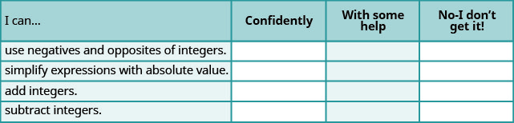
ⓑ What does this checklist tell you about your mastery of this section? What steps will you take to improve?